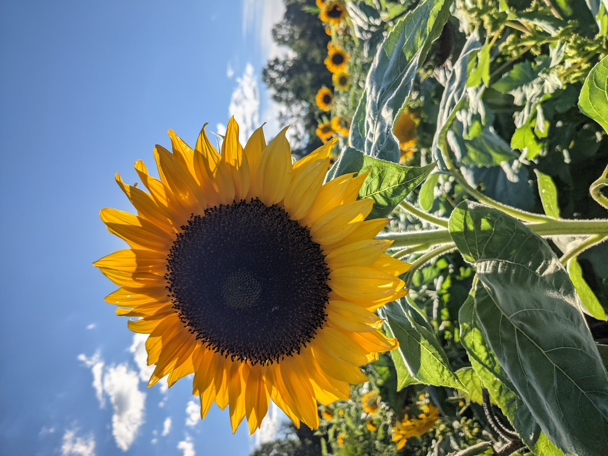

Bees & Butterflies
Bees and butterflies are important, so humans must do their part to make sure they have what they need... native gardens!
Did you know that when you disturb your environment, certain plant species will make a large, sudden appearance? The morning glory is a great example! The bees sure do love the pollen they bring .

My favorite Ohio native plants
- Milkweed
- Trillium
- Black Eyed Susan
Get insprired!
Plants are solar powered air purifiers whose filter never needs replacing
If HALF (Yes, only half) od American lawns were replaced with native plants, we would create the equivelent of a 20 million acre national park